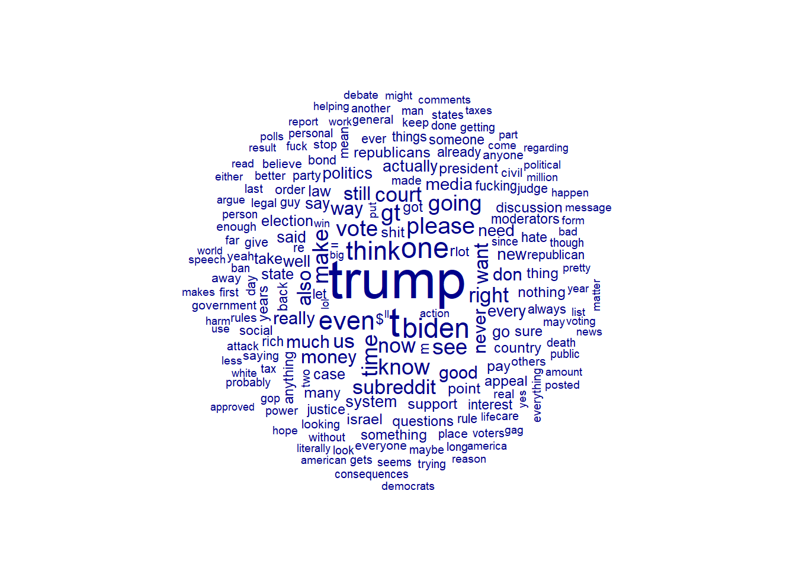

── Conflicts ────────────────────────────────────────── tidyverse_conflicts() ──
✖ dplyr::filter() masks stats::filter()
✖ dplyr::lag() masks stats::lag()
ℹ Use the conflicted package (<http://conflicted.r-lib.org/>) to force all conflicts to become errors
library(quanteda)
Warning: package 'quanteda' was built under R version 4.3.3
Package version: 4.0.1
Unicode version: 15.1
ICU version: 74.1
Parallel computing: 8 of 8 threads used.
See https://quanteda.io for tutorials and examples.
Warning: package 'RCurl' was built under R version 4.3.2
Attaching package: 'RCurl'
The following object is masked from 'package:tidyr':
complete
Data
I scraped data from the Politics subreddit (r/politics) on April 2nd 2024 using R (RedditExtractoR package)
The code below is inactive because it can take a lot of time to run it. So I already scrapped the data and saved the files as csv.
#politics_reddit <- find_thread_urls(subreddit = "politics", sort_by="new", period = "day")#politics_reddit_comments <- get_thread_content(politics_reddit$url)#Separate the lists into different objects#politics_list1 <- politics_reddit_comments[[1]] #politics_list2 <- politics_reddit_comments[[2]]### Saving all the lists in csv to avoid the need to scrap the data several times#write.csv(politics_reddit, file = "C:/Users/fbeta/OneDrive/1_UMASS_DACSS/695N - Social Network/R-695N-Network/Final Project/data/politics_comments1.csv")#write.csv(politics_list1, file = "C:/Users/fbeta/OneDrive/1_UMASS_DACSS/695N - Social Network/R-695N-Network/Final Project/data/politics_comments2.csv")#write.csv(politics_list2, file = "C:/Users/fbeta/OneDrive/1_UMASS_DACSS/695N - Social Network/R-695N-Network/Final Project/data/politics_comments3.csv")
This subreddit has 8.5 million users, so the data can be very extensive, however the package used here (RedditExtractoR) pulled the last 1000 post only.
getwd()
[1] "C:/Users/fbeta/OneDrive/1_UMASS_DACSS/695N - Social Network/695NBlog_Felix_Betancourt/posts/Post 2 - Scrapping the data and Exploratory Analysis"
X
1 Supreme Court starts arguments as Biden administration defends abortion pill access
2 Why the Supreme Court abortion pill case is so fraught for the right
3 2015 securities fraud charges against Texas AG Ken Paxton to be dropped in deal with prosecutors
4 Biden campaign calls Trump \030weak and desperate\031 after New York court hearing
5 Felony securities fraud charges against Attorney General Ken Paxton to be dropped after nine years
6 Trump Is Up to His Old Tricks to Pay His Bills
date_utc timestamp
1 2024-03-26 1711463500
2 2024-03-26 1711463310
3 2024-03-26 1711462666
4 2024-03-26 1711462651
5 2024-03-26 1711462570
6 2024-03-26 1711462189
title
1 Supreme Court starts arguments as Biden administration defends abortion pill access
2 Why the Supreme Court abortion pill case is so fraught for the right
3 2015 securities fraud charges against Texas AG Ken Paxton to be dropped in deal with prosecutors
4 Biden campaign calls Trump \030weak and desperate\031 after New York court hearing
5 Felony securities fraud charges against Attorney General Ken Paxton to be dropped after nine years
6 Trump Is Up to His Old Tricks to Pay His Bills
text subreddit comments
1 politics 34
2 politics 21
3 politics 194
4 politics 24
5 politics 43
6 politics 15
url
1 https://www.reddit.com/r/politics/comments/1bo9ce0/supreme_court_starts_arguments_as_biden/
2 https://www.reddit.com/r/politics/comments/1bo99ng/why_the_supreme_court_abortion_pill_case_is_so/
3 https://www.reddit.com/r/politics/comments/1bo90vd/2015_securities_fraud_charges_against_texas_ag/
4 https://www.reddit.com/r/politics/comments/1bo90oj/biden_campaign_calls_trump_weak_and_desperate/
5 https://www.reddit.com/r/politics/comments/1bo8zhu/felony_securities_fraud_charges_against_attorney/
6 https://www.reddit.com/r/politics/comments/1bo8u1n/trump_is_up_to_his_old_tricks_to_pay_his_bills/
dim(politik1)
[1] 983 8
head(politik2)
X
1 1
2 2
3 3
4 4
5 5
6 6
url
1 https://www.reddit.com/r/politics/comments/1bo9ce0/supreme_court_starts_arguments_as_biden/
2 https://www.reddit.com/r/politics/comments/1bo99ng/why_the_supreme_court_abortion_pill_case_is_so/
3 https://www.reddit.com/r/politics/comments/1bo90vd/2015_securities_fraud_charges_against_texas_ag/
4 https://www.reddit.com/r/politics/comments/1bo90oj/biden_campaign_calls_trump_weak_and_desperate/
5 https://www.reddit.com/r/politics/comments/1bo8zhu/felony_securities_fraud_charges_against_attorney/
6 https://www.reddit.com/r/politics/comments/1bo8u1n/trump_is_up_to_his_old_tricks_to_pay_his_bills/
author date timestamp
1 Cybertronian1512 3/26/2024 1711463500
2 ban_hus 3/26/2024 1711463310
3 coasterghost 3/26/2024 1711462666
4 Quirkie 3/26/2024 1711462651
5 texastribune 3/26/2024 1711462570
6 thenationmagazine 3/26/2024 1711462189
title
1 Supreme Court starts arguments as Biden administration defends abortion pill access
2 Why the Supreme Court abortion pill case is so fraught for the right
3 2015 securities fraud charges against Texas AG Ken Paxton to be dropped in deal with prosecutors
4 Biden campaign calls Trump \030weak and desperate\031 after New York court hearing
5 Felony securities fraud charges against Attorney General Ken Paxton to be dropped after nine years
6 Trump Is Up to His Old Tricks to Pay His Bills
text subreddit score upvotes downvotes up_ratio total_awards_received golds
1 politics 304 304 0 0.95 0 0
2 politics 127 127 0 0.92 0 0
3 politics 1250 1250 0 0.95 0 0
4 politics 791 791 0 0.96 0 0
5 politics 421 421 0 0.91 0 0
6 politics 226 226 0 0.91 0 0
cross_posts comments
1 0 34
2 0 21
3 0 194
4 0 24
5 0 43
6 0 15
dim(politik2)
[1] 983 16
head(politik3)
X
1 1
2 2
3 3
4 4
5 5
6 6
url
1 https://www.reddit.com/r/politics/comments/1bo9ce0/supreme_court_starts_arguments_as_biden/
2 https://www.reddit.com/r/politics/comments/1bo9ce0/supreme_court_starts_arguments_as_biden/
3 https://www.reddit.com/r/politics/comments/1bo9ce0/supreme_court_starts_arguments_as_biden/
4 https://www.reddit.com/r/politics/comments/1bo9ce0/supreme_court_starts_arguments_as_biden/
5 https://www.reddit.com/r/politics/comments/1bo9ce0/supreme_court_starts_arguments_as_biden/
6 https://www.reddit.com/r/politics/comments/1bo9ce0/supreme_court_starts_arguments_as_biden/
author date timestamp score upvotes downvotes golds
1 AutoModerator 3/26/2024 1711463501 1 1 0 0
2 EmmaLouLove 3/26/2024 1711465125 79 79 0 0
3 ctguy54 3/26/2024 1711466287 41 41 0 0
4 EmmaLouLove 3/26/2024 1711466455 13 13 0 0
5 msfamf 3/26/2024 1711467091 19 19 0 0
6 EmmaLouLove 3/26/2024 1711467635 13 13 0 0
comment
1 \nAs a reminder, this subreddit [is for civil discussion.](/r/politics/wiki/index#wiki_be_civil)\n\nIn general, be courteous to others. Debate/discuss/argue the merits of ideas, don't attack people. Personal insults, shill or troll accusations, hate speech, any suggestion or support of harm, violence, or death, and other rule violations can result in a permanent ban. \n\nIf you see comments in violation of our rules, please report them.\n\n For those who have questions regarding any media outlets being posted on this subreddit, please click [here](https://www.reddit.com/r/politics/wiki/approveddomainslist) to review our details as to our approved domains list and outlet criteria.\n \n We are actively looking for new moderators. If you have any interest in helping to make this subreddit a place for quality discussion, please fill out [this form](https://docs.google.com/forms/d/1y2swHD0KXFhStGFjW6k54r9iuMjzcFqDIVwuvdLBjSA).\n \n\n***\n\n\n*I am a bot, and this action was performed automatically. Please [contact the moderators of this subreddit](/message/compose/?to=/r/politics) if you have any questions or concerns.*
2 US Solicitor General Elizabeth Prelogar reminded the Supreme Court the courts have no business questioning the FDA\031s expertise on whether a drug should be approved or not.
3 This will not stop the conservatives on the court from believing that they know best. \n\nNext the court will decide whether you can take aspirin, Tylenol, or Motrin.
4 I am guessing even this SCOTUS knows that inserting themselves into FDA decisions will cause the floodgates to open. What would be the next drug that would be brought before them? It could be any drug advertised with the multiple warnings of side effects including death.
5 >What would be the next drug that would be brought before them? \n\nIf current trends and Republican talking points are any indication it's birth control.
6 True. There is an ongoing attack by the conservative justices on Americans\031 personal privacy rights. \n\nClarence Thomas called for overturning the constitutional rights the court had affirmed for access to contraceptives and LGBTQ rights in his Roe opinion. \034In future cases, we should reconsider all of this Court\031s substantive due process precedents, including Griswold, Lawrence, and Obergefell.\035\n\nRepublicans seem hellbent on inserting themselves into anything they don\031t agree with, whether it be food for needy children or a woman\031s autonomy. People should remember this when they vote.
comment_id
1 1
2 2
3 2_1
4 2_1_1
5 2_1_1_1
6 2_1_1_1_1
dim(politik3)
[1] 12414 11
As we can see the the information in object “politik1” is redundant with the information in “politik2” so I won’t use “politik1” at all. “Politik2” contain information about the title of the post, author, and some numeric information like up-down votes, number of replies to the post. “politik3” contain detailed comments on each post.
I’ll use Text as Data methods to identify key words in the title of the posts (like Biden-Trump, or other topics of interest).
Let’s do some data wrangling:
# Cleaning and wranglingpolitik_df <- politik2 %>%select(-url, -X, -timestamp) #eliminating non-relevant columnspolitik_df <-as_tibble(politik_df)politik_df$date <-as.Date(politik_df$date, format ="%m/%d/%Y")head(politik_df)
Looking at the comments from user “Automoderator”, it is like a Reddit moderator bot reminding rules of the forum, so I’ll delete the rows belonging to AutoModerator”. Also there are few commments “deleted”.
Warning: max.words is deprecated; use max_words instead

It does seem that Trump is dminting the conversations.
Let’s explore a bit about the authors.
#let's create some tables to see frequencies and totals#first I created a count columnpolitik_df3 <- politik_df3 %>%mutate(countid ="1")politik_df3$countid <-as.numeric(politik_df3$countid)head(politik_df3)
#Upvotes as a proportion of commentssummary_votes_ratio <- politik_table2 %>%group_by(author) %>%summarize(Ratio_upvotes_per_comment =sum(upvotes)/sum(countid))summary_votes_ratio <- summary_votes_ratio %>%arrange(desc(Ratio_upvotes_per_comment))print(summary_votes_ratio)
#Let's see how is the distribution of upvotes per comment#I may need to decide to analyze certain number of users only and the #level of interaction for those users could be a criteria de decide thispercentiles <-quantile(summary_votes_ratio$Ratio_upvotes_per_comment, probs =c(0.25, 0.50, 0.75, 0.90))print(percentiles)